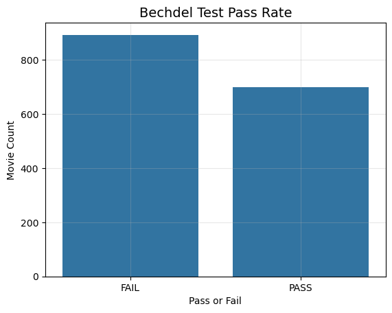
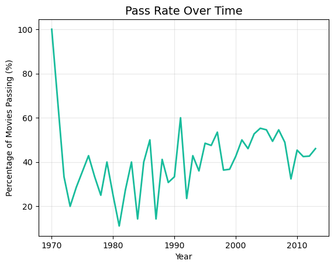
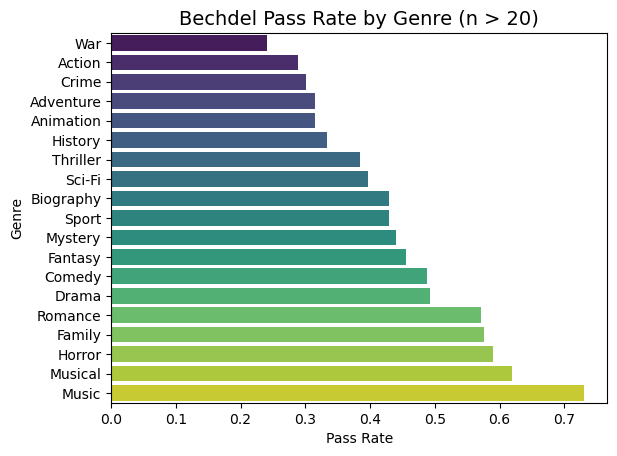
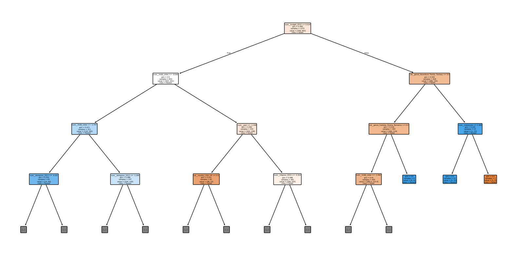
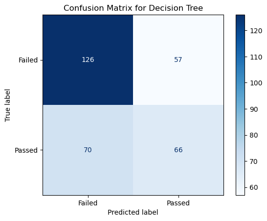
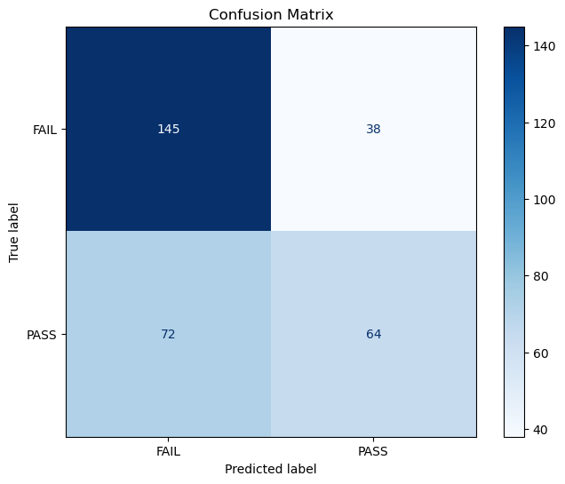
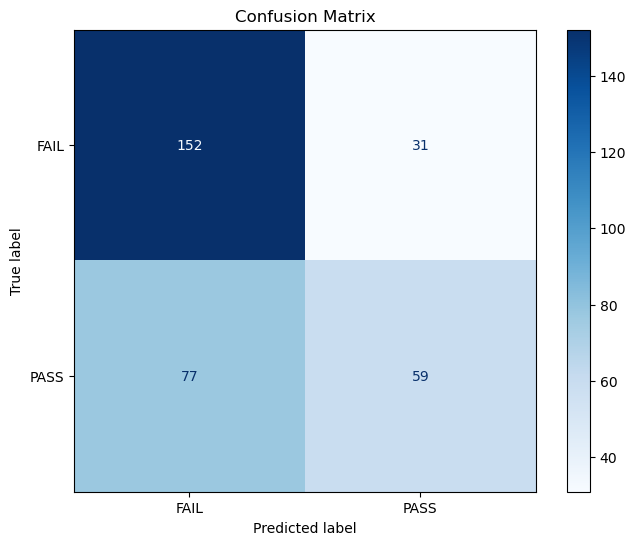

# Load packages
import pandas as pd
from sklearn.model_selection import train_test_split
import numpy as np
import seaborn as sns
import matplotlib.pyplot as plt
from sklearn.compose import ColumnTransformer
from sklearn.pipeline import Pipeline
from sklearn.impute import SimpleImputer
from sklearn.preprocessing import OneHotEncoder, LabelEncoder
from xgboost import XGBClassifier
from sklearn.ensemble import GradientBoostingClassifier
from sklearn.metrics import classification_report, confusion_matrix, ConfusionMatrixDisplay, balanced_accuracy_score
from sklearn.model_selection import GridSearchCV, RepeatedStratifiedKFold
from sklearn.ensemble import GradientBoostingClassifier
from sklearn.preprocessing import FunctionTransformer
from sklearn.preprocessing import StandardScaler, OneHotEncoder, FunctionTransformer
from sklearn.ensemble import RandomForestClassifier
from sklearn.tree import DecisionTreeClassifier, plot_tree
from sklearn.metrics import accuracy_scoreSample Analysis
By Hannah Mills
Introduction
For my 2026 Winter Term class, we had to do an individual project using a dataset to create interesting data visualizations and learning something new. I chose to take a movie dataset, and use plotly and a shiny dashboard to analyze movies that pass what is known as the Bechdel test. Most importantly, disproving the fact that films containing significant female leads or characters tend to perform worse at a box office, or generate a lower ROI.
For this sample analysis, I chose to expand on this by implementing machine learning techniques to predict whether a movie will or will not pass this test based on a series of features.
# Load dataset
movies_raw = pd.read_csv('movies.csv')
#Drop uneeded columns
cols_to_drop = ['imdb', 'title', 'test', 'clean_test', 'code', 'imdb_id', 'response', 'poster', 'type', 'plot', 'awards', 'error', 'period_code', 'decade_code', 'actors', 'director',
'budget', 'domgross', 'intgross', 'actors', 'writer', 'released']
movies_clean = movies_raw.drop(columns=cols_to_drop)
# Handle missing values - drop them. We have enough rows. Should not impute these
movies_clean = movies_clean.dropna(subset=['imdb_rating', 'genre', 'runtime'])
# Clean runtime column by dropping min and imdb_votes by removing comma
movies_clean['runtime'] = movies_clean['runtime'].str.extract('(\d+)').astype(int)
movies_clean['imdb_votes'] = movies_clean['imdb_votes'].str.replace(',', '').astype(float)
# Map PASS to 1 and FAIL to 0
movies_clean['target'] = movies_clean['binary'].map({'PASS': 1, 'FAIL': 0})<positron-console-cell-49>:18: SyntaxWarning: "\d" is an invalid escape sequence. Such sequences will not work in the future. Did you mean "\\d"? A raw string is also an option.Exploratory Data Analysis (EDA)
# First let's take a count to ensure that our outcomes are somewhat balanced, which they are.
sns.countplot(data=movies_clean, x='binary')
plt.title('Bechdel Test Pass Rate', fontsize=14)
plt.ylabel('Movie Count')
plt.xlabel('Pass or Fail')
plt.grid(alpha=0.3)
# how to rename 0 and 1 to pass versus fail
trend_df = movies_clean.groupby('year')['binary'].value_counts(normalize=True).unstack().reset_index()
trend_df['pass_percentage'] = trend_df['PASS'] * 100
sns.lineplot(data=trend_df, x='year', y='pass_percentage', color='#18bc9c', linewidth=2)
plt.title('Pass Rate Over Time', fontsize=14)
plt.ylabel('Percentage of Movies Passing (%)')
plt.xlabel('Year')
plt.grid(alpha=0.3)
genre_df = movies_clean.dropna(subset=['genre', 'binary']).copy()
genre_df['genre'] = genre_df['genre'].str.split(', ')
genre_exploded = genre_df.explode('genre')
genre_stats = genre_exploded.groupby('genre')['binary'].value_counts(normalize=True).unstack().reset_index()
genre_counts = genre_exploded['genre'].value_counts().reset_index()
genre_counts.columns = ['genre', 'count']
genre_analysis = pd.merge(genre_stats, genre_counts, on='genre')
genre_analysis = genre_analysis[genre_analysis['count'] > 20].sort_values('PASS', ascending=True)
sns.barplot(data=genre_analysis, y='genre', x='PASS', palette='viridis')
plt.title('Bechdel Pass Rate by Genre (n > 20)', fontsize=14)
plt.xlabel('Pass Rate')
plt.ylabel('Genre')<positron-console-cell-35>:12: FutureWarning:
Passing `palette` without assigning `hue` is deprecated and will be removed in v0.14.0. Assign the `y` variable to `hue` and set `legend=False` for the same effect.
Text(0, 0.5, 'Genre')
Preprocessing and Pipelines
cat_cols = ['rated', 'language', 'country', 'genre']
numeric_features = ['year', 'budget_2013', 'domgross_2013', 'intgross_2013', 'metascore', 'imdb_rating', 'runtime', 'imdb_votes']
numeric_transformer = Pipeline(steps=[
('imputer', SimpleImputer(strategy='median')),
('log', FunctionTransformer(np.log1p, feature_names_out='one-to-one')),
('scaler', StandardScaler())
])
categorical_transformer = Pipeline(steps=[
('imputer', SimpleImputer(strategy='constant', fill_value='missing')),
('onehot', OneHotEncoder(handle_unknown='ignore'))
])
preprocessor = ColumnTransformer(
transformers=[
('num', numeric_transformer, numeric_features),
('cat', categorical_transformer, cat_cols)
]
)
rfc_pipeline = Pipeline(steps=[
('preprocessor', preprocessor),
('classifier', RandomForestClassifier(n_estimators=100, random_state=4025))
])X = movies_clean[cat_cols + numeric_features]
y = movies_clean['target']
X_train, X_test, y_train, y_test = train_test_split(X, y, test_size=0.2, random_state=4025)Decision Tree
dtc_pipeline = Pipeline(steps=[
('preprocessor', preprocessor),
('classifier', DecisionTreeClassifier(random_state=4025))
])
#Fit pipeline
dtc_pipeline.fit(X_train, y_train)
#Create tree model
tree_model = dtc_pipeline.named_steps['classifier']
feature_names = dtc_pipeline.named_steps['preprocessor'].get_feature_names_out()
#Display model
plt.figure(figsize=(20,10))
plot_tree(
tree_model,
feature_names = feature_names,
class_names=['Failed', 'Passed'],
filled=True,
rounded=True,
max_depth=3
)
plt.show()
#Create predictions
dtc_pred = dtc_pipeline.predict(X_test)
#Print accuracay score
accuracy = accuracy_score(y_test, dtc_pred)
print(f"Accuracy: {accuracy:.2%}")
#Build confusion matrix and display
cm = confusion_matrix(y_test, dtc_pred)
display = ConfusionMatrixDisplay(confusion_matrix=cm, display_labels=['Failed', 'Passed'])
display.plot(cmap='Blues')
plt.title("Confusion Matrix for Decision Tree")
plt.show()
print("\n--- Detailed Classification Report #2 ---")
print(classification_report(y_test, dtc_pred, target_names=['FAIL', 'PASS']))Accuracy: 60.19%
--- Detailed Classification Report #2 ---
precision recall f1-score support
FAIL 0.64 0.69 0.66 183
PASS 0.54 0.49 0.51 136
accuracy 0.60 319
macro avg 0.59 0.59 0.59 319
weighted avg 0.60 0.60 0.60 319
Random Forest Classifier
rfc_pipeline.fit(X_train, y_train)
accuracy = rfc_pipeline.score(X_test, y_test)
print(f"Pipeline Accuracy: {accuracy:.4f}")
rfc_pred = rfc_pipeline.predict(X_test)Pipeline Accuracy: 0.6364cm = confusion_matrix(y_test, rfc_pred)
fig, ax = plt.subplots(figsize=(8, 6))
disp = ConfusionMatrixDisplay(confusion_matrix=cm, display_labels=['FAIL', 'PASS'])
disp.plot(cmap='Blues', ax=ax, values_format='d')
plt.title('Confusion Matrix')
plt.grid(False)
plt.show()
print("\n--- Detailed Classification Report ---")
print(classification_report(y_test, rfc_pred, target_names=['FAIL', 'PASS']))
--- Detailed Classification Report ---
precision recall f1-score support
FAIL 0.65 0.78 0.71 183
PASS 0.60 0.44 0.51 136
accuracy 0.64 319
macro avg 0.63 0.61 0.61 319
weighted avg 0.63 0.64 0.62 319
#Define grid
param_grid = {
'classifier__max_features': [None, 'sqrt', 'log2', 0.2, 0.5, 0.8]
}
#Begin grid search
cv_strategy1 = RepeatedStratifiedKFold(n_splits=5, n_repeats=3, random_state=4025)
grid_search = GridSearchCV(
estimator=rfc_pipeline,
param_grid=param_grid,
cv=cv_strategy1,
scoring='accuracy',
n_jobs=-1
)
#Fit and print best scores and max features
grid_search.fit(X_train, y_train)
print(f"Best Score: {grid_search.best_score_:.2%}")
print(f"Best max_features: {grid_search.best_params_['classifier__max_features']}")Best Score: 63.23%
Best max_features: log2#Find best pipe
best_rfc_pipe = grid_search.best_estimator_
#Find final predictions and print accuracy score
best_rfc_pred = best_rfc_pipe.predict(X_test)cm3 = confusion_matrix(y_test, best_rfc_pred)
fig, ax = plt.subplots(figsize=(8, 6))
disp = ConfusionMatrixDisplay(confusion_matrix=cm3, display_labels=['FAIL', 'PASS'])
disp.plot(cmap='Blues', ax=ax, values_format='d')
plt.title('Confusion Matrix')
plt.grid(False)
plt.show()
print("\n--- Detailed Classification Report #2 ---")
print(classification_report(y_test, best_rfc_pred, target_names=['FAIL', 'PASS']))
--- Detailed Classification Report #2 ---
precision recall f1-score support
FAIL 0.67 0.79 0.72 183
PASS 0.63 0.47 0.54 136
accuracy 0.66 319
macro avg 0.65 0.63 0.63 319
weighted avg 0.65 0.66 0.65 319
XGB Boost Model
xgb_pipeline = Pipeline(steps=[
('preprocessor', preprocessor),
('classifier', XGBClassifier(objective='multi:softmax', num_class=3))
])#Set parameters and fit
xgb_pipeline.set_params(classifier=GradientBoostingClassifier())
xgb_pipeline.fit(X_train, y_train)
#Generate predictions
xgb_pred = xgb_pipeline.predict(X_test)cm2 = confusion_matrix(y_test, xgb_pred)
fig, ax = plt.subplots(figsize=(8, 6))
disp = ConfusionMatrixDisplay(confusion_matrix=cm2, display_labels=['FAIL', 'PASS'])
disp.plot(cmap='Blues', ax=ax, values_format='d')
plt.title('Confusion Matrix')
plt.grid(False)
plt.show()
print("\n--- Detailed Classification Report #2 ---")
print(classification_report(y_test, xgb_pred, target_names=['FAIL', 'PASS']))
--- Detailed Classification Report #2 ---
precision recall f1-score support
FAIL 0.66 0.82 0.73 183
PASS 0.65 0.44 0.52 136
accuracy 0.66 319
macro avg 0.65 0.63 0.63 319
weighted avg 0.66 0.66 0.64 319
#Make stratified k fold and param grid, run grid search
cv_strategy = RepeatedStratifiedKFold(n_splits=5, n_repeats=3, random_state=4025)
param_grid = {
'classifier__n_estimators': [50, 100, 200, 300],
'classifier__learning_rate': [0.05, 0.1, 0.2]
}
grid_search = GridSearchCV(
estimator=xgb_pipeline,
param_grid=param_grid,
cv=cv_strategy,
scoring='f1_macro',
n_jobs=-1,
verbose=1
)
grid_search.fit(X_train, y_train)
#Find best parameters and fit the best model
print(f"Best parameters: {grid_search.best_params_}")
best_xgb_model = grid_search.best_estimator_
best_xgb_pred = best_xgb_model.predict(X_test)Fitting 15 folds for each of 12 candidates, totalling 180 fits
Best parameters: {'classifier__learning_rate': 0.05, 'classifier__n_estimators': 200}cm3 = confusion_matrix(y_test, best_xgb_pred)
fig, ax = plt.subplots(figsize=(8, 6))
disp = ConfusionMatrixDisplay(confusion_matrix=cm3, display_labels=['FAIL', 'PASS'])
disp.plot(cmap='Blues', ax=ax, values_format='d')
plt.title('Confusion Matrix')
plt.grid(False)
plt.show()
print("\n--- Detailed Classification Report #2 ---")
print(classification_report(y_test, best_xgb_pred, target_names=['FAIL', 'PASS']))
--- Detailed Classification Report #2 ---
precision recall f1-score support
FAIL 0.66 0.83 0.74 183
PASS 0.66 0.43 0.52 136
accuracy 0.66 319
macro avg 0.66 0.63 0.63 319
weighted avg 0.66 0.66 0.65 319